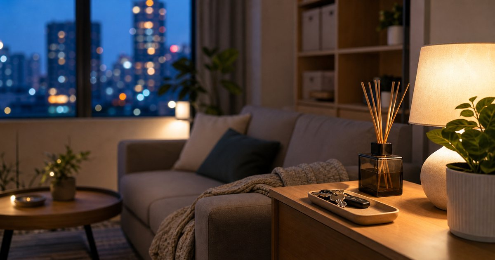

Elite Fashion TW｜下班後的安定感：香氛、燈光與收納的居家升級順序
下班後的家，不必一次改造成樣品屋。先把氣味、光線與最容易堆積的物品位置整理好，空間就會從混亂變得可停留。

先處理進門後第一分鐘的感受
很多居家升級失敗，不是因為東西買錯，而是順序錯了。先買大型家具，卻忽略玄關鞋包、外套、信件和鑰匙的位置，回家第一分鐘仍然混亂；先買香氛，卻讓清潔用品、食物味和濕氣混在一起，氣味反而更複雜。
比較穩的做法，是先處理進門後看得到、聞得到、摸得到的三個點：玄關放置區、主要光源、空氣中的氣味。THANN 和大檜仁心適合放在氣味層，燈后處理光線，完美主義或灰調這類家居選品則能協助把桌面與玄關小物收住。
- 先整理玄關，再談客廳風格。
- 先確認氣味來源，再添購香氛。
- 先補足柔和光源，再換大型家具。
香氛不是遮味，而是讓空間有界線
香氛最容易被誤用成遮味工具。若廚房油味、浴室濕氣或鞋櫃氣味還沒處理，直接疊上擴香或蠟燭，只會讓空間變得更悶。香氛應該放在清潔之後，負責建立情緒界線，而不是掩蓋問題。
THANN 適合偏精緻、禮盒感與身體保養延伸的空間；大檜仁心的檜木調性更適合玄關、車內或書桌旁需要木質感的人；au fait 無非與蒔柒則可作為蠟燭、擴香或小型儀式感補充。選擇時不必追求味道濃，而是看每天聞半小時後是否仍然舒服。
- 小空間先選低擴散、低侵略性的味道。
- 玄關、臥室、書桌不一定要用同一種香調。
燈光先求分層，不必一開始就全屋智能
家裡只靠一盞白光吸頂燈，很容易在下班後顯得像辦公室。你需要的未必是複雜的智能系統，而是把光線分成工作光、停留光和背景光。燈后可以作為 LED 與居家照明的主線；灰調的燈飾與家飾選品則適合補足比較柔和的角落氣氛。
最常見的錯誤，是客廳、餐桌、書桌全部用同一個亮度。下班後若還要回訊息、整理帳單或讀書，桌面需要清楚；但沙發旁、床邊與玄關應該更柔。燈光分層之後，家才會從單一功能空間變成可轉換的生活場景。
- 工作區要看得清楚，不等於全屋都要很亮。
- 沙發、床邊、玄關適合用較低亮度作為停留光。
收納先收高頻物品，不要急著買滿盒子
收納的第一步不是買盒子，而是找出每天都會亂的東西。鑰匙、悠遊卡、耳機、發票、護手霜、口罩、充電線、香氛小物，這些比大型衣櫃更常破壞畫面。完美主義、灰調或 SUSS Living 這類選品，可以用托盤、層架或小型收納處理高頻物品。
如果你還不知道要買哪種收納，先在玄關與桌面各設一個固定暫放區。只要東西不再散落，空間就會立刻清楚。等兩週後確認哪些物品真的每天出現，再決定是否買層架、櫃體或更完整的收納系統。
- 先收每天拿取的東西，再收低頻物品。
- 托盤比大盒子更適合處理回家後的臨時小物。
不要讓儀式感變成另一種負擔
居家儀式感如果需要很多步驟，很快就會被現實打敗。真正能留下來的，是三分鐘內能完成的動作：開一盞較柔的燈、把包放到固定位置、讓空間有一點清楚的氣味，然後坐下來。
香氛、燈光與收納的順序，其實是在替下班後的自己減少判斷。你不必每天把家整理到完美，但可以讓家有幾個穩定的落點。這些落點越明確，生活越不需要靠意志力支撐。
- 下班後可完成的動作，才值得設計成固定流程。
- 如果某個香氛或燈具讓你需要一直照顧它，就不適合作為日常。
購買順序可以從小物開始，而不是從大件開始
如果預算有限，先買一個好的擴香或蠟燭、一盞角落燈、兩個固定收納點，通常比直接換沙發或餐桌更有效。大型家具會改變格局，小物則先改變每天的使用感。
等氣味、光線和收納位置穩定後，再回頭看家具是否真的需要更換，你會更清楚哪些東西是必要，哪些只是被照片刺激出的衝動。這是居家升級最省力，也最不容易後悔的順序。
- 小物先改善使用感，大件再處理格局。
- 買之前先問：它會減少麻煩，還是增加照顧工作？
FAQ
小宅適合用香氛蠟燭還是擴香？
看使用習慣。蠟燭需要人在旁邊並注意火源，適合短時間儀式；擴香較適合固定空間，但小宅要避免味道過濃。若不確定，先從低擴散、可移動的小容量開始。
租屋不能改燈具，還能改善光線嗎？
可以。先用桌燈、立燈、床邊燈或可移動光源補足分層，讓工作區、休息區和玄關有不同亮度，不一定要更換原本吸頂燈。
收納用品應該一次買齊嗎？
不建議。先觀察兩週，確認每天真正會亂的物品，再購買托盤、層架或櫃體。一次買齊容易買到尺寸、動線或使用頻率不合的收納用品。
下一步建議
如果你想先從小地方開始，建議先挑一個氣味、一盞角落燈，再替玄關或桌面設定固定收納點。
重要警語
本文為一般居家整理與選購情境整理，不構成身心療效、健康改善或居家安全保證。香氛、燈具與收納用品仍需依個人使用習慣、空間條件、商品頁規格與安全標示評估；價格、活動與庫存請以商品頁公告為準。
本文含品牌／商品導購連結；若你透過部分商品連結前往選購，Elite Fashion 可能取得合作收益。本文仍以編輯判斷與使用情境整理為主，價格、規格、活動與庫存請以商品頁公告為準。